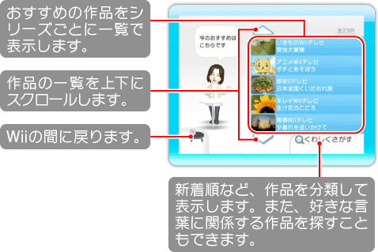
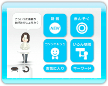

12
番組を見る
『Wiiの間』の画面で「番組を見る」を選んでください。オリジナル番組などの映像を中心とした、いろいろな作品を見ることができます。映像の見かたなどについては、P.16をご覧ください。

●
くわしくさがす

それぞれのメニューを選ぶと、新着の作品だけをまとめて表示したり、好きな単語を入力することでその単語を含む作品を探したりすることができます。
新着
『Wiiの間』で見られる最新の作品を見ることができます。
まんぞく
作品を見た人の投票（→P.16）の結果、満足した人が多かった作品を見ることができます。
コンシェルジュ
部屋を訪れたコンシェルジュMiiがおすすめする作品を見ることができます。
いろんな間
『Wiiの間』で各種コンテンツを提供している会社やテーマごとに作品を見ることができます（→P.11）。
お気に入り
お気に入りに登録した作品が表示されます（→P.19）。
お気に入りから作品を削除するには、画面左のごみ箱をポイントして
を押し、削除したい作品を選んで「お気に入りから外す」を選んでください。
キーワード
入力欄をポイントして
を押し、好きな言葉を入力して「さがす」を選んでください。タイトルや説明文にその言葉が含まれている作品が表示されます。